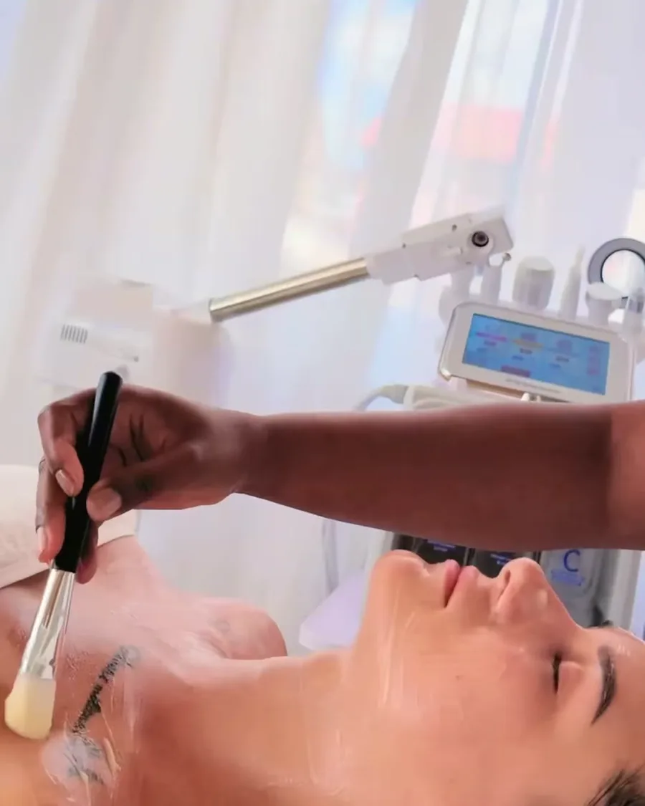
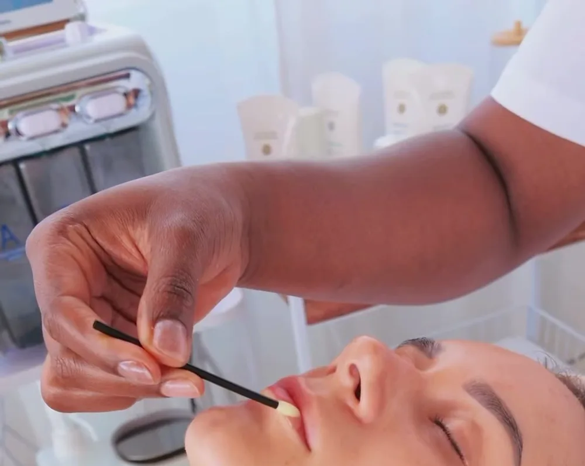

4 Wochen
Montag bis Freitag, tagsüber
- Kompakt in vier Wochen zur vollständigen Gesichtsbehandlung
- Täglich Praxis – zuerst gegenseitig, dann an Modellen
- Apparative Kosmetik inklusive
- Prüfung & Lune-Beauty-Zertifikat
Lernen Sie direkt im laufenden Studio bei einer staatlich anerkannten Kosmetikerin: persönlich betreut, mit echten Modellen, professionellen Geräten und allem, was Sie für Ihre ersten eigenen Kundinnen brauchen.

Gleiche Inhalte, gleiche Prüfung – wählen Sie das Tempo, das zu Ihrem Leben passt.
Montag bis Freitag, tagsüber
Samstag & Sonntag, über einen Monat
Kostenlos & unverbindlich
Preise und nächste Termine auf Anfrage – Sie erhalten innerhalb von 48 Stunden ein persönliches Angebot.
Acht Module, die aufeinander aufbauen – von der Hautanalyse bis zur eigenen Kundin.
Ihre Ausbilderin ist staatlich anerkannte Kosmetikerin und hat in renommierten Kosmetikstudios in Deutschland und Frankreich gearbeitet. Sie lernen nicht in einem Schulungsraum, sondern im echten Studio – mit denselben Geräten, Produkten und Abläufen, mit denen wir unsere Kundinnen jeden Tag behandeln.

Senden Sie uns Ihre Anfrage – wir melden uns innerhalb von 48 Stunden mit den nächsten Terminen, Preisen und allen Details. Lieber direkt sprechen? Rufen Sie an oder schreiben Sie per WhatsApp: 0179 1544002.
Nein. Die Ausbildung beginnt mit den Grundlagen und führt Sie Schritt für Schritt bis zur vollständigen Gesichtsbehandlung. Voraussetzung ist ein Mindestalter von 18 Jahren.
Sie schließen mit einer schriftlichen und praktischen Prüfung ab und erhalten ein Lune-Beauty-Zertifikat über die absolvierten Inhalte. Es handelt sich um einen privaten Zertifikatslehrgang, nicht um die staatlich geregelte dreijährige Berufsausbildung.
Sehr viel: Sie üben zuerst gegenseitig und behandeln danach echte Modelle – im laufenden Studio, mit professionellen Geräten und Produkten.
Die Preise richten sich nach Kursformat und Termin. Senden Sie uns eine unverbindliche Anfrage – Sie erhalten innerhalb von 48 Stunden alle Termine, Preise und Details.
Ja, viele Absolventinnen starten nebenberuflich oder mit eigenem Studio. Im Modul „Selbstständig arbeiten“ besprechen wir Preise, Organisation und Kundengewinnung; zur Gewerbeanmeldung und den Hygienevorschriften Ihrer Stadt geben wir Ihnen eine Checkliste mit.